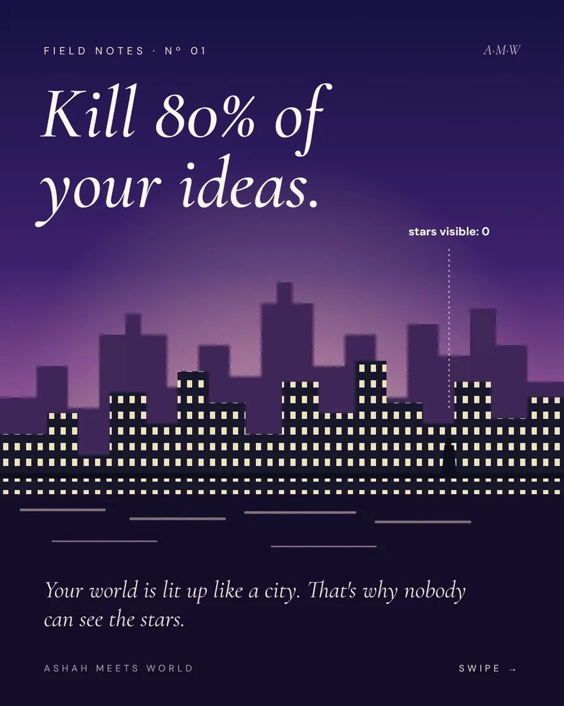
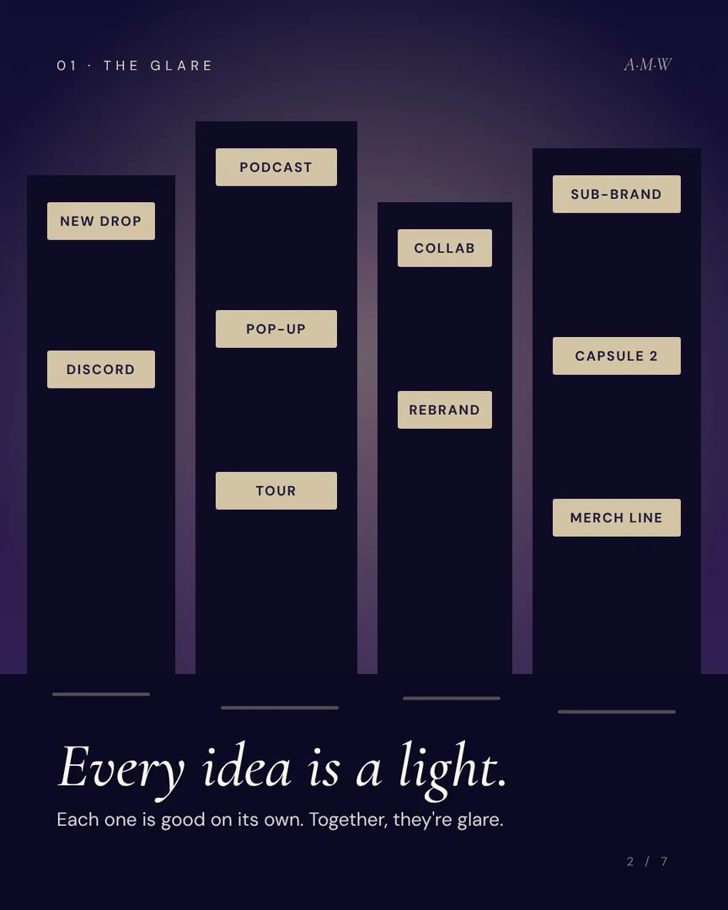
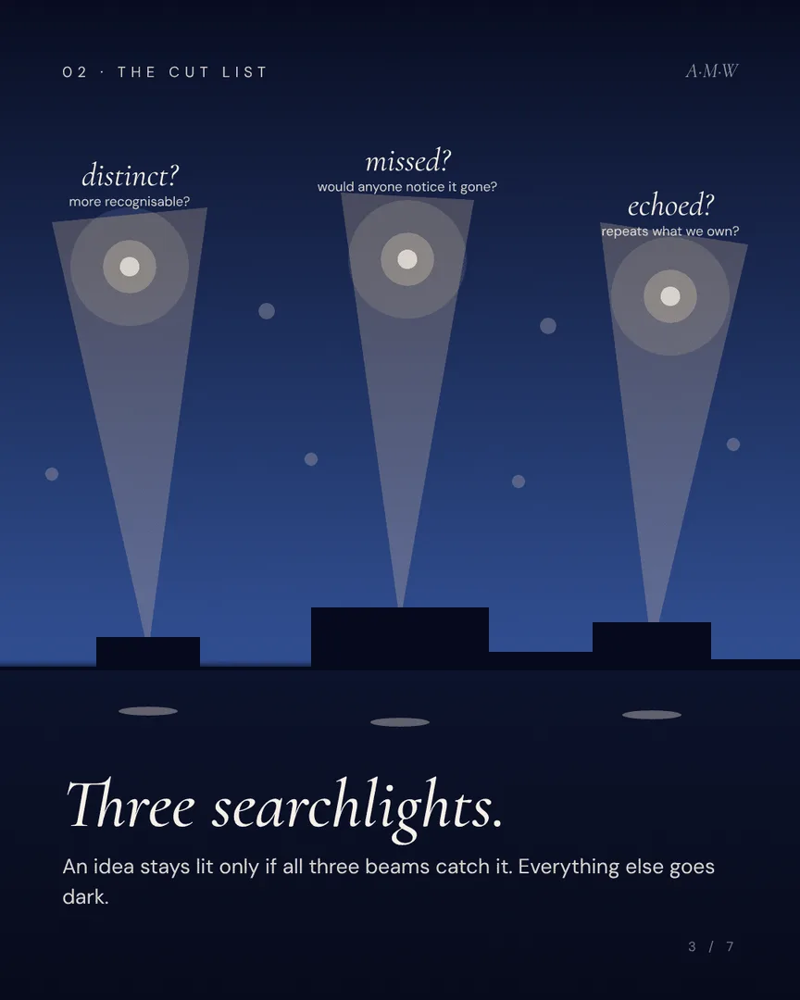
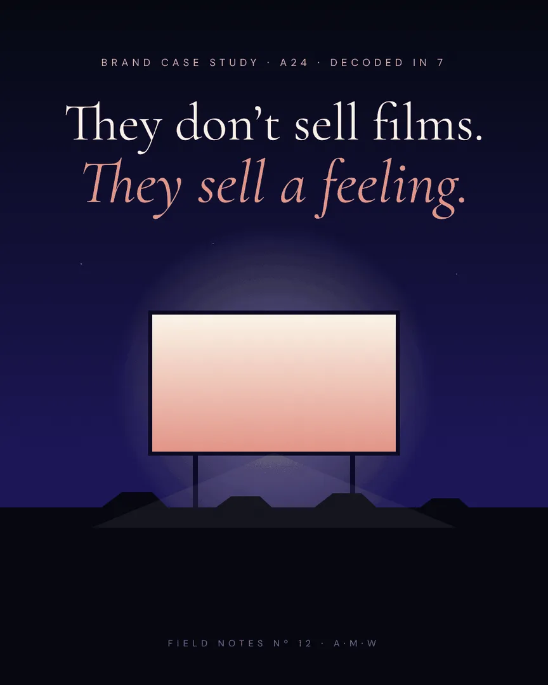
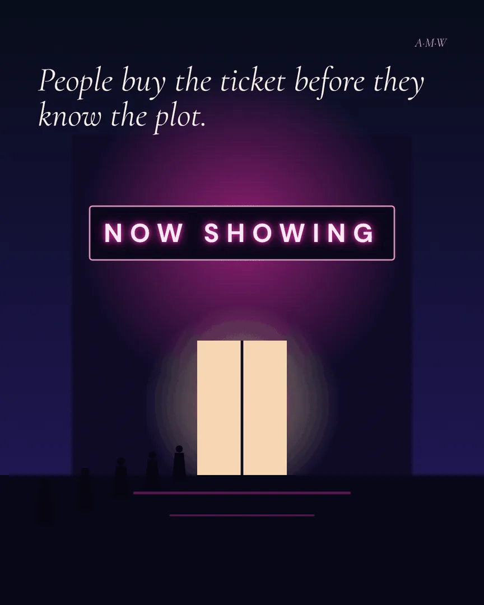
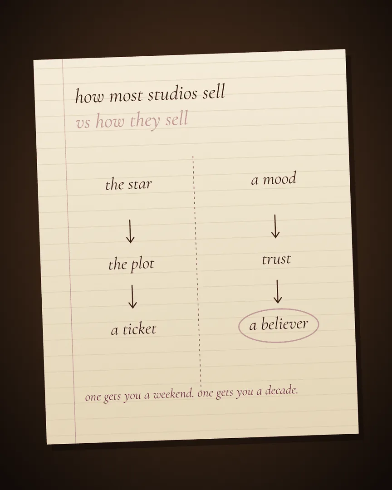
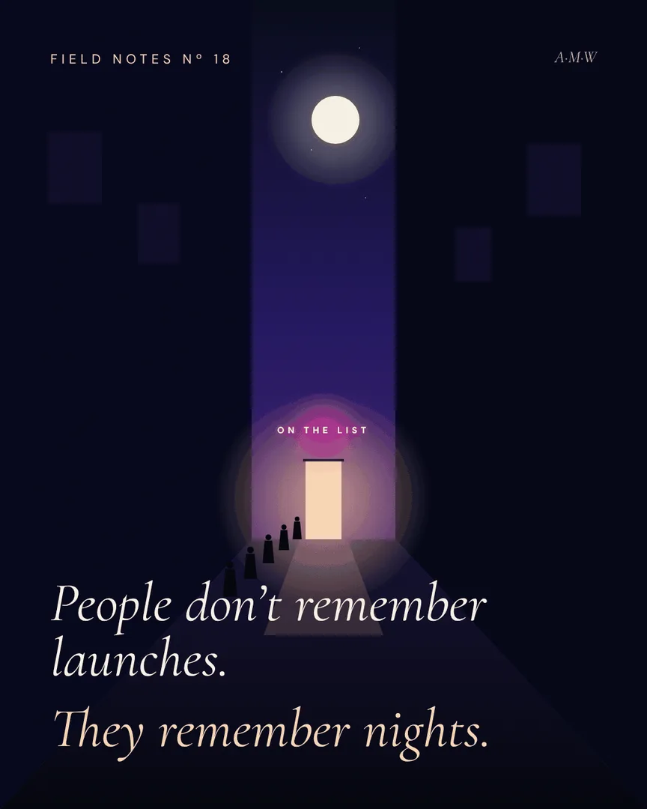
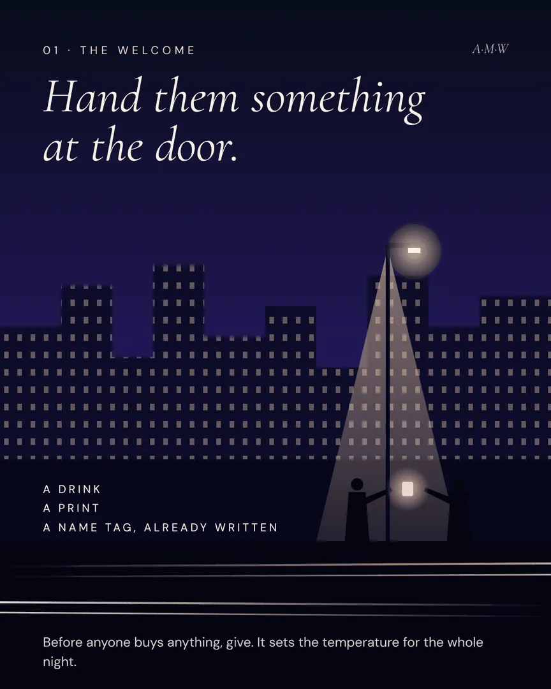
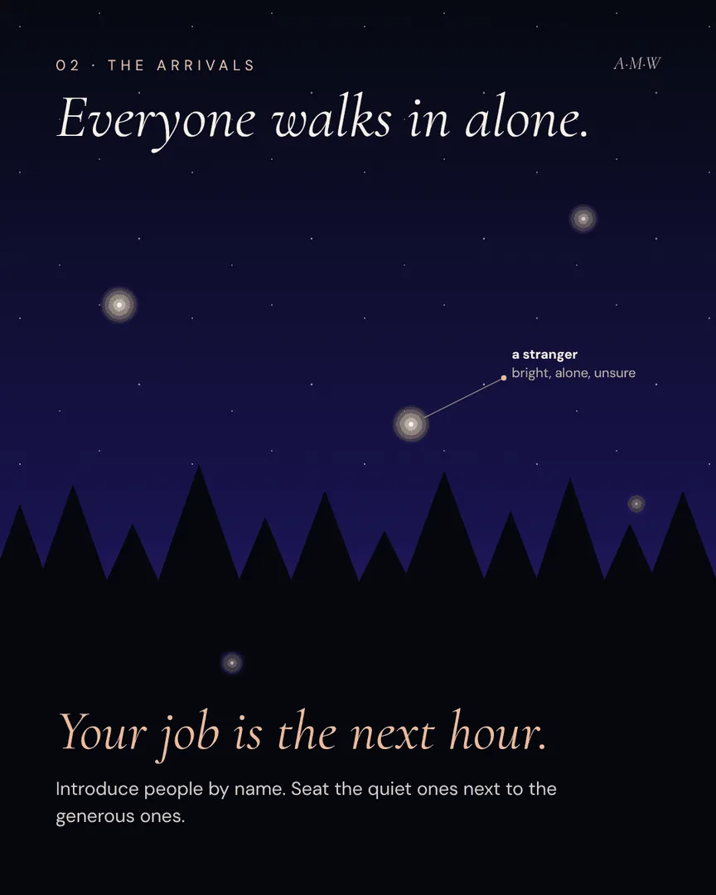

Field Notes
A value-carousel series that decodes brands, campaigns and cultural moments, built as a batchable content system in one visual world.
- Client
- Ashah Meets World
- Year
- 2026
- Role
- Concept, art direction, copy, illustration, content system

The brief
Make a content format that brings founders into the world — one that teaches something useful on every slide and still feels unmistakably like Ashah Meets World.
The system
Every carousel follows the same rules: stop → hold → payoff, a deliberate colour arc from first frame to last, one glowing focal point per slide, and every slide able to stand on its own. Each post takes one of four accent colours, one per skill.
The output
Fourteen carousels batched in a single production run, two weeks of posting, with a repeatable pipeline for stills, PDFs and animated versions.








